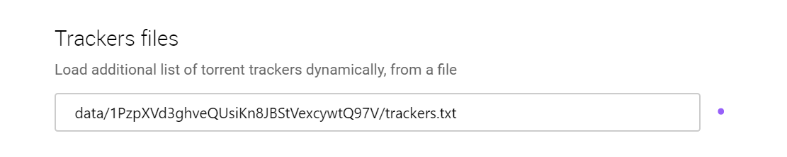

TrackerSync
What is this?
This site contains a list file,which you can configure zeronet to read trackers from and use them to find more peers.The list can be dynamically updated,so only good and fast trackers are used.
How to use it?
In Zeronet settings(http://127.0.0.1:43110/Config),copy the following line to the "Trackers files" section:
data/1PzpXVd3ghveQUsiKn8JBStVexcywtQ97V/trackers.txt
Like this:

In some instances,Zeronet won't find the file if backslashes are used in the address.In that case,just use regular slashes.Apart from that,a restart is maybe required,and the trackers should work fine.
Why?
First this project started as an experiment,to see if the concept is working.
As has been proven it works without a problem,the aim is to provide a secondary solution,if Zeronet's trackers go offline for some reason.I will add more and more working trackers,and remove the ones that became dead.
Ideas,discussion
I started a new thread on Zerotalk about the subject.Let's have a discussion,any idea or comment is welcome!
Also feel free to suggest trackers to be added into the list!
Zerotalk thread